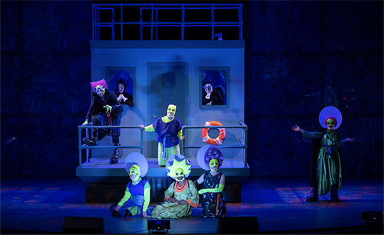
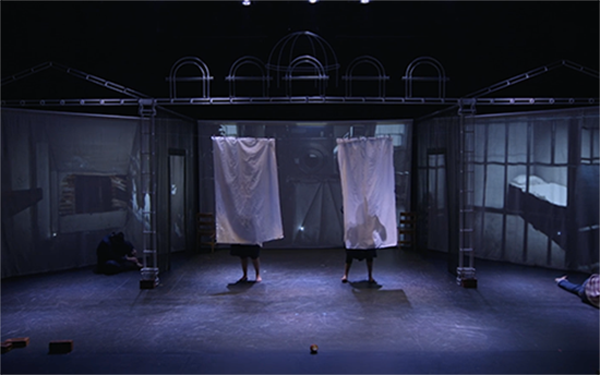
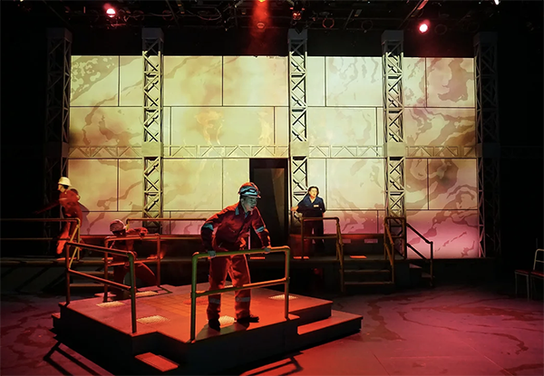
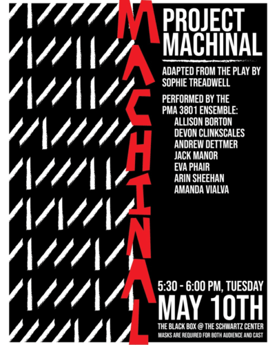
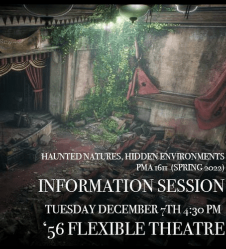
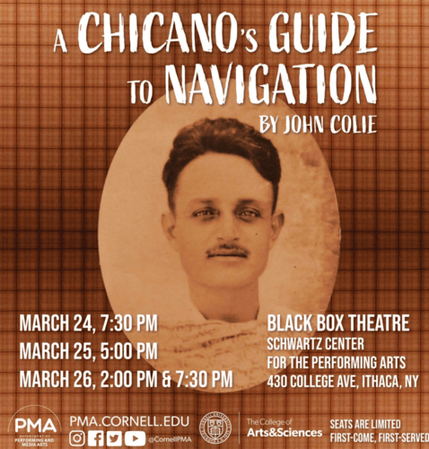
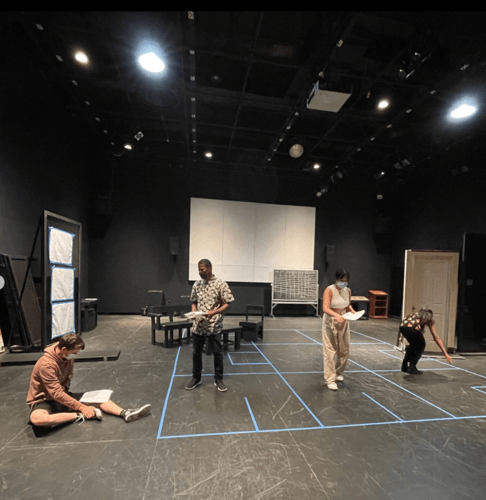

Mr. Burns:
For the production Mr. Burns, the scene had a great deal of involvement. The shop built multiple moving sets - including a car, a power station, and a piece of a house with a balcony and roof balcony. The shop painted the floor of the Kipling theater and painted a back drop. There were also a large amount of props that were involved in this show.

The Mush Hole:
The Mush Hole is a visiting production from a dance theater group based in canada. For this production the scene shop helped set up the stage pieces and put together the back drop. The show ran for two nights and the scene shop was there to assist the production crew with anything they needed.

Spill:
Spill is a student produced production for a thesis project. To ensure the success of Spill, the scene shop painted the entire floor of the flex theater to resemble an oil spill, constructed rig like structures out of metal to resemble support beams, and build flats that could have images projected onto them during the show.
Past Productions

Project Machinal:
The Scene Shop was essential in creating the sets and designs for the adapted play "Project Machinal". The students have spent this semester creating a mini-adaptation of Sophie Treadwell's play "Machinal." Working as an ensemble in using a variety of physical theater techniques, they have created a kaleidoscopic expressionist lens into a mechanized & oppressive world

Haunted Natures, Hidden Environment:
The Scene Shop designed and create the sets for the Haunted Natures, Hidden Environments by using the skills students learned to create an immersive-environmental performance that will take place in several theatre/performance spaces inside the Schwartz Center.

A Chicano's Guide to Navigation:
The Scene Shop worked on the sets of the play A Chicano's Guide to Navigation a metatheatrical exploration of the Mexican-American experience, the ever-present role of social media in our public and private lives, and interconnectedness written and directed by John Colie.

Saving for 17:
Here is a look at behind the scenes of some of the set pieces created by the Scene Shop for the play Saving for 17, an original play by Owen Reynolds ’25, is a 30-minute, semi-autobiographical, tragicomedy play about a family’s experiences during Hurricane Irma in Miami and the Florida Keys in 2017.
.png)